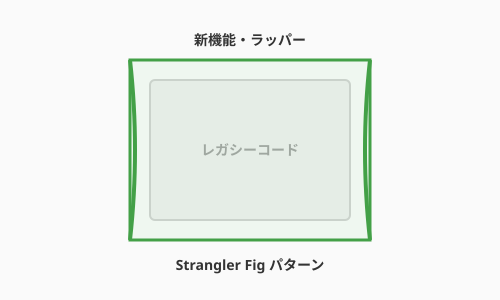

3.8 【外伝】失われた古代技術——レガシーコードの考古学

導入: 呪われた遺構に足を踏み入れる
熟練したアルケミスト（エンジニア）であれば、避けては通れない冒険があります。それは、数年、時には十数年以上前に書かれ、当時の術者たちが去り、ドキュメントも失われ、しかし今なお組織の心臓部で動き続けている「古代の術式（レガシーコード）」の探索です。
それらは、触れた瞬間に崩れ落ちる砂の城のようであり、不用意に書き換えれば未知の災い（意図しないバグ）を振りまく呪いのアイテムのようでもあります。本節では、この「レガシーコード」という名のダンジョンを安全に探索し、現代の光を当てるための考古学的なアプローチを学びます。
考古学の第一歩：非破壊検査（観察とテスト）
遺跡を重機で壊してはならないように、レガシーコードをいきなり書き換えるのは禁物です。
1. 動作の写し（仕様化テスト）
何が正しい動きなのか分からない場合、まずは現在の動きをそのまま「真実」として記録します。これを仕様化テスト（Characterization Test）と呼びます。 「なぜこう動くのか」は問わず、「今はこう動いている」という事実をテストコードという形で固定し、セーブポイントを作ります。
2. 依存関係の透視
古代の術式は、あちこちの部品が複雑に絡み合っています。
- Seams（継ぎ目）: コードを壊さずに挙動を差し替えられる場所を探します。
- 依存の抽出: 巨大なメイン処理から、少しずつ計算ロジック（純粋関数）を切り出し、外の世界へ救出します。
復元の作法：絞め殺し植物（Strangler Fig）パターン
巨大な遺跡を一度に改築するのは不可能です。現代の賢者たちは、Strangler Fig（絞め殺し植物）パターンという戦術を使います。

- 包囲: 古い術式の周囲に、新しい術式の「殻」を作ります。
- 委譲: 特定の機能だけを、古い術式から新しい術式へと少しずつルーティングを切り替えます。
- 置換: すべての機能が新しくなれば、中心にあった古い術式は自然に消滅します。
これは、システムを止めることなく、生命体を入れ替えるように進化させる高度な錬金術です。
まとめ
- 敬意を払う: レガシーコードは「過去の成功の証」である。当時の制約の中で最善を尽くした術者たちに敬意を払い、慎重に扱う。
- テストという防具: 触る前に必ずテストで現状を固定する。
- 少しずつ光を: 一度に直そうとせず、関心の分離（3.3節）を適用しながら、小さな「成功の島」を広げていく。
古代の知恵を現代の術式へと昇華させたとき、あなたは真のマスター・アルケミストへと一歩近づくでしょう。
コーディングエージェントによる遺跡探索の工夫
AIコーディングエージェントは、レガシーコードの解読において「疲れ知らずの考古学者補佐」として機能します。ただし、使い方を誤ると「自信満々に誤った推測を返す」事態になりかねません。以下の工夫を意識することで、エージェントの読解力を最大限に引き出せます。
工夫1：コンテキストを「広く」渡す
エージェントが見える範囲でしか推測できないことを忘れてはなりません。
❌ 断片だけを渡す（推測が増え、精度が下がる）
「この関数を説明してください」と言って1関数だけ貼る
✅ 関連ファイルをまとめて渡す
「以下のファイル群を読んで全体像を把握してください：
- process_order.py（対象関数）
- models/order.py（使用しているモデル）
- db/legacy_schema.sql（DB構造）」CLI型エージェント（Claude Code等）であれば、プロジェクト全体を自動把握するため、この制約が大幅に緩和されます。
工夫2：「説明 → テスト → 変更」の順序を守る
エージェントに最初から「直して」と頼むのは、遺跡の内部を見ずに重機を入れるようなものです。
Step 1（説明）: 「このコードが何をしているか、平易な日本語で説明してください。実装は一切変更しないでください。」
Step 2（テスト）: 「説明を踏まえ、現在の動きを記録する仕様化テストを書いてください。」
Step 3（変更）: 「テストが通ることを確認しながら、〇〇の部分をリファクタリングしてください。」このフローを崩さないことが、安全な考古学の鉄則です。
工夫3：「わからない」を引き出す
エージェントは自信満々に誤った推測をすることがあります。不確かな部分を積極的に吐き出させる詠唱を使いましょう。
「このコードを分析してください。
不明な点や、推測の確信度が低い箇所については、
必ず『推測：（理由）』と明記してください。
事実と推測を必ず区別して記述してください。」工夫4：CLAUDE.md にレガシーの「地雷マップ」を記録する
エージェントが学んだことをセッションをまたいで活かすために、CLAUDE.md に「既知の危険地帯」を書き込んでいきます。
## レガシーコードの注意事項
- `process_order()` 関数はグローバル変数 `_CURRENT_USER` に暗黙依存している（削除禁止）
- `LegacyDB` クラスは本番環境で直接接続のため、テスト時は必ずモックに差し替えること
- `calculate_tax()` は1997年の税率ロジックが混在している（2004年以前の注文データ用）発見した「地雷」をドキュメント化することで、次のセッションのエージェントも（そして人間の同僚も）同じ罠を踏まずに済みます。
AIへの詠唱例
以下に、実際のレガシーコード解析でよく使われるシナリオを示します。
詠唱1：全体像の把握（読解フェーズ）
# 分析対象：10年前に書かれた注文処理関数
def proc_ord(uid, itms, disc=None, flg=0):
import datetime
r = []
tot = 0
db = get_db_conn()
u = db.execute(f"SELECT * FROM users WHERE id={uid}").fetchone()
if not u:
return False
for i in itms:
p = db.execute(f"SELECT price, stock FROM products WHERE id={i['id']}").fetchone()
if p and p[1] > 0:
price = p[0]
if disc and u['rank'] > 2:
price = price * (1 - disc)
if flg == 1:
price = price * 1.08
elif flg == 2:
price = price * 1.10
tot += price
r.append({'id': i['id'], 'price': price})
db.execute(f"UPDATE products SET stock=stock-1 WHERE id={i['id']}")
if tot > 0:
db.execute(f"INSERT INTO orders VALUES ({uid}, {tot}, '{datetime.datetime.now()}')")
db.commit()
return {'items': r, 'total': tot}上記の関数を分析してください。
以下の観点で回答してください：
1. この関数が行っていること（自然言語で、箇条書き）
2. 引数の意味（`flg=0/1/2` が何を表すかの推測を含む）
3. 発見できるバグ・セキュリティリスク（SQLインジェクション等）
4. 隠れた副作用（DBへの書き込み等、関数名から見えないもの）
5. 推測が不確かな部分には「推測：」と明記してください
実装は一切変更しないでください。詠唱2：仕様化テストの生成
上記の `proc_ord()` 関数に対して、
現在の動作をそのまま記録する仕様化テスト（Characterization Test）を書いてください。
条件：
- pytest 形式で記述すること
- データベースはモック（unittest.mock）を使用すること
- 以下のケースを最低限カバーすること：
- 通常購入（flg=0）
- 消費税8%適用（flg=1）
- ユーザーが存在しない場合
- 在庫が0の商品が含まれる場合
テストの目的はリファクタリング後のリグレッションを検知することです。
「正しい動作」ではなく「現在の動作」を記録するスタンスで書いてください。詠唱3：依存関係の地図を描く
このコードベースを読み、`proc_ord()` 関数の依存関係マップを作成してください。
出力形式：
1. 直接依存（この関数が呼び出しているもの）
2. 暗黙依存（グローバル変数、モジュールレベルの状態など）
3. 副作用（外部システムへの書き込みなど）
4. 「継ぎ目（Seam）」の候補：テスト時に差し替えられそうな境界
その後、「最もリスクが低いリファクタリングの最初の一手」を1つ提案してください。
（実装はまだ行わないでください）詠唱4：Strangler Figパターンによる段階的移行計画
`proc_ord()` をモダンな設計へ移行するため、
Strangler Figパターンを使った段階的移行計画を立ててください。
要件：
- 本番サービスを止めないこと
- 各ステップは独立してデプロイ可能にすること
- 仕様化テストが常に通ること
- 最終的にはClean Architectureの層構造に沿った設計にすること
出力：
- 移行ステップのリスト（5〜7段階）
- 各ステップの「やること」と「確認方法」
- 最初に着手すべきステップのコード案さらに学ぶためのリソース
- 📚 書籍: Michael Feathers『レガシーコード改善ガイド』（テストのない既存コードを安全に変更するための戦術書）
- 📚 書籍: Mik Kersten『Project to Product』（プロジェクト単位の「開発」から、価値を生み出し続ける「プロダクト」へと視点を変える重要性を説く）
- 🌐 Web: Martin Fowler "Strangler Fig Application"（大規模なレガシーシステムを段階的にリプレースする「絞り殺しパターン」の解説）
- 📄 論文: Manny Lehman "Programs, Life Cycles, and Laws of Software Evolution" (1980)（ソフトウェアが変更され続けることで複雑さが増大する「レーマンの法則」を提唱した論文）